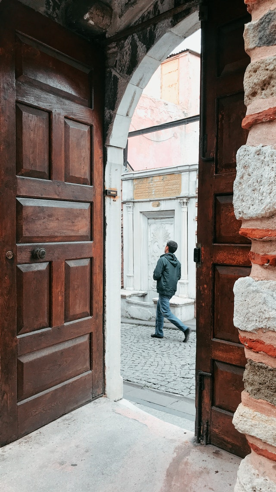

<h1>HTML Lists</h1>

<ul>
    <li>Orange</li>
    <li>Bowl</li>
    <li>Table</li>
</ul>

<ol>
    <li>Wake</li>
    <li>Work</li>
    <li>Sleep</li>
</ol>
<!-- Dictionary Lists -->
<!-- Parent <dl> Dictionary List</dl>
    <dt>dictionary tilte</dt>
    <dd>dictionary data</dd> -->
<dl>
    <dt>Sunday</dt>
        <dd>The first day of the week. Also the sunniest.</dd>
    <dt>Monday</dt>
        <dd>The second day of the week. This is the least popular day.</dd>
</dl>

<h1>Images</h1>
<!-- img tags are self-closing tag, meaning ther are no ending tags 
src filepath can be shortened if it is in the same directory as the main html page-->
<!--  -->



<figure>
    
    <figcaption>The <em>rossetta leaf</em> is the most common form of latte art.</figcaption>
</figure>